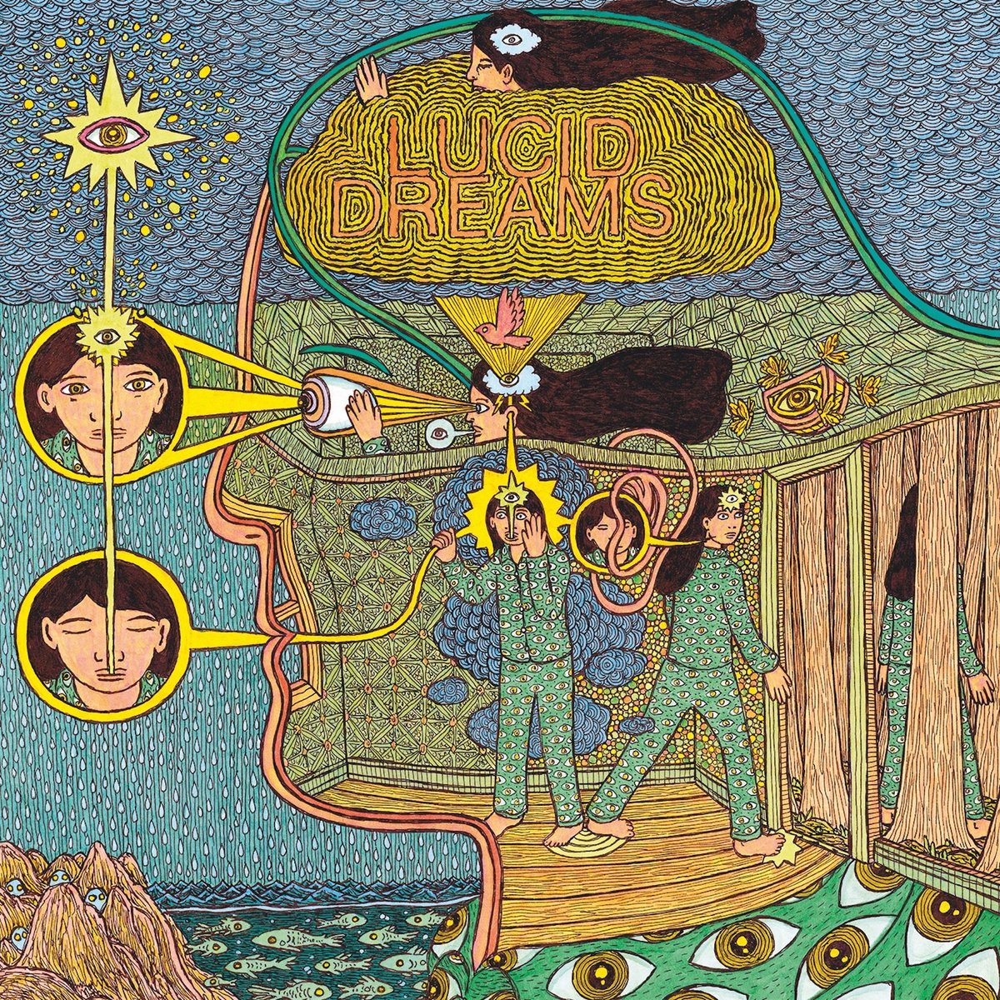
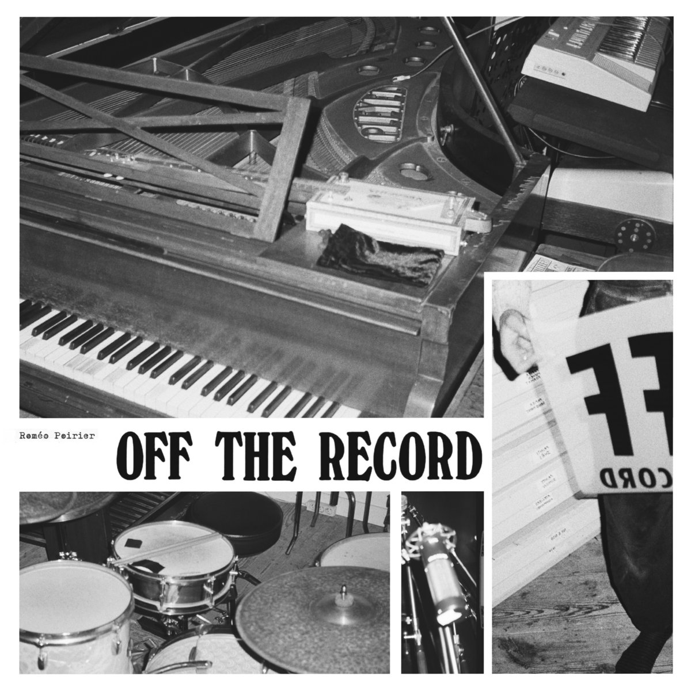
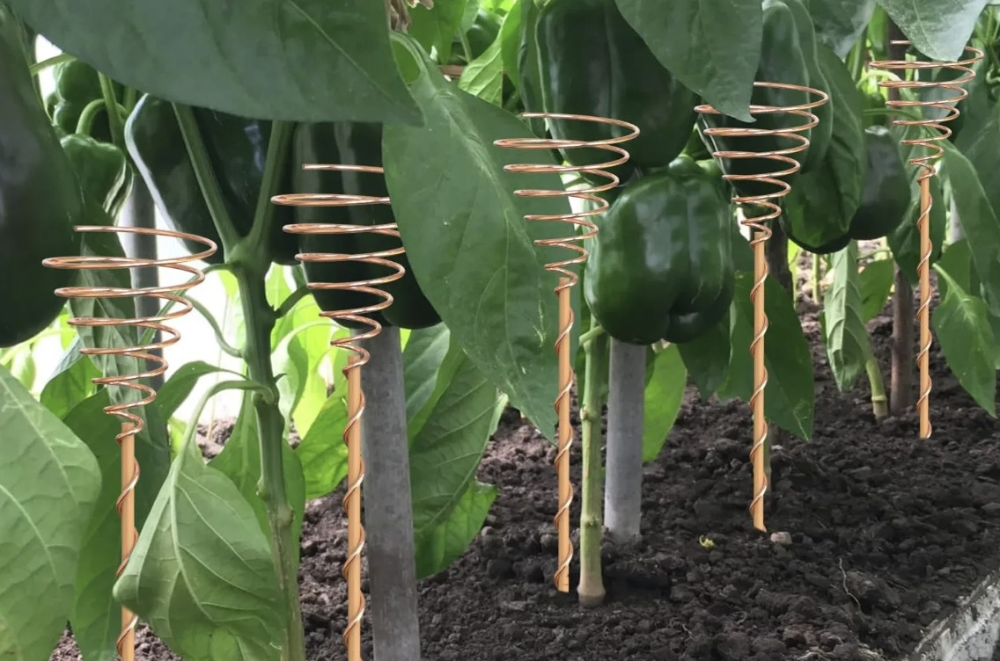
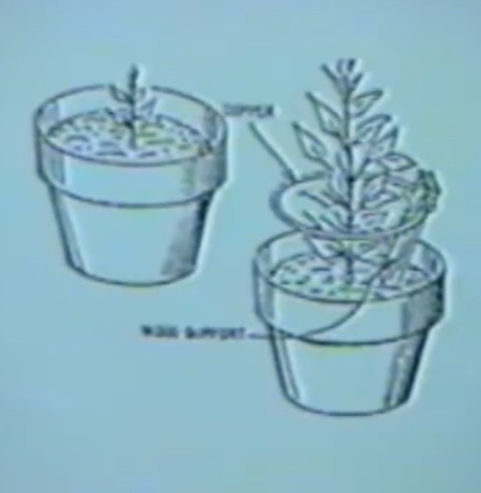

Louise Broadman Suzakana Electronique : The Dream State Synthesis Experiemnts and Field Investigation
Louise Broadman born 1942 is an American electronic composer and researcher known for pioneering dream-state sonification in the early 1970s. Working primarily between Detroit, Uganda, and Auvergne in the French countryside, she transformed sleep data, psychoacoustic experiments, and dream-oriented meditation rituals into spatial auditory compositions using handmade through-hole electronic synthesizers. She earned a PhD in Oneiric Cognition and Psychoacoustic Cybernetics from Grace Marshland Polytechnic University, where her dissertation, Acousmatic Pathways into Hypnopompic States of the Sleeping Mind, shaped her Sleepcousonique multi-channel performance series, creating sonic environments with live biometric feedback, tape-splicing hypnosis, and synthesized trajectories of sound. Broadman held residencies internationally and was a founding contributor to BALSA Black Archive of Luxurious Sonic Acts, preserving experimental Black sonic practices, among many other organizations. She continues to host her world-renowned listening sessions at the North Sea Laboratory for Hydroponic Listening and Atelier Électrique Noire.
The Dream Journal
Reading and Listening List:


The Lakhovsky Multiple Wave Oscillator
Research Question
Can a recursive feedback loop between dream documentation and experimental music production and synthesis techniques produce changes in dream content and the resulting technical sonic landscape over time?
Hypothesis
Repeated listening to music derived from previous dreams will influence future dreams, which will, in turn, influence future compositions, creating an evolving conversation between waking composition and the dream state.
Independent Variable
What changes over time.
- The music listened to before sleep.
- Phase 1: Control tracks
- Phase 2: Your own dream-derived compositions
Dependent Variable
What you observe.
- Dream imagery
- Recurring architecture
- Emotions, states of being
- Sonic and sensorial interactions
- Person appearance, who and of what relation
- Musical ideas that emerge after the wake state
- Lucid dreaming
Controls
Things you try to keep consistent.
- Listening time (for example, 30 minutes to an hour before sleep), 3 times a week as the 3oror Trifecta Trimin Dreaming Triangle Copper Ground. Twice without copper, and once with copper underneath your pillow.
- AIAIAI headphones
- Dream log format: HTML Journal
- Time between waking and writing. The mind must be clear; the room must be quiet.
Procedure
- Collect research information and finalize the experiment. ✓2026073011:42PMEST
- Create, compose, finalize, and listen to your control tracks for two weeks, starting July 30th, 2026.
- Listen to one track 30 minutes to an hour before you sleep, in darkness. The sound is the last sensorial interaction with your phone or computer before sleep.
- Sleep. On these chosen days, try to listen only to the tracks in this playlist, or related research material.
- Immediately record the dream upon waking.
- Log dreams and development in the HTML Journal. Note copper influence and log when there are no dreams.
- Extract visual, emotional, and sensorial elements.
- Compose music from those elements in the days in-between.
- Collect and research samples, compositions, synthesis techniques, readings, and listenings in the days in-between.
- Replace or add that composition to the listening list.
- Repeat 3 times per week until December 1st, 2026.
- Collect all recordings and compose the content into a tape of up to 90 minutes.
- Release the tape on the RealMoreReal label.
Log
2026-08-04
In a resort house where my grandmothers portrait appears in the reflection of all of the windows. I search a book store for book on how to design, that I had seen once there before as part of a box set of how black cover how to books, but only to find a cspan branded book on teaching, old and falling apart with high school level annotations. I was in trouble with Cata and was searching for a book that would help me apologize. I go to take a shower in one of the far bathrooms of the house, and while brushing my teeth realize the room was taking me away, through a train tunnel, I had accidentally pressed some elevator button. The next stop was miles away, the bathroom station pulled into a packed train platform, I was only in my towel. When I had gotten off there was a man laughing and I explained to him I pressed the next stop button in my bathroom and ended up here. He asked if I was alright or needed water and I said that I was fine, but he insisted I fill up his water bottle for him at a nearby fountain. The fountain was connected to some interior where there was a kitchen and a room I had been using for storage. It took me forever to fill this water bottle, the fountain had so many settings for different flavors and slushies and jello type things, I was always in the wrong set, and plain drinking water was labeled “aira.” A kid walks by exclaiming to his friends that the next train was in 2 minutes, as a maintenance cargo train passes by, blinking its bright white lights and ringing its deep sparse solemn bell. I finally fill the bottle, run into the room to see if I can grab anything to bring back with me, there was a backpack underneath piles and piles, that I really wanted but didn’t know if I could get to. I start to head back for the train.
2026-08-02
In an abandoned corner of an empty rooftop in a dismal town. One smiling torpedo, one witch and 3 hooded goblins. A miraculous display, the corner of a cube with yellow and green vines climbing the walls. A door with a purple light , led into a night club run by two old timers. In the back, a busy busy craft studio in preparation for a huge play, and someone I was looking for, from back at the camp site, where I left chi-chi, near that weird furnished abandoned house. These types of houses are nothing new to me, but they’re never above ground, orange and sun-dried. A maze centered around a spiral staircase in one corner. When it’s inevitable morphing into dark corridors, a door, steel and heavy, with some backwards playing prog rock distant, led to a room full of dull 3 foot dark grey frogs with indistinguishable tattoos, and Anne lied wired on a velvet throne with grey skin and green hair. She exclaimed she was completely normal, but figured out how to dye her skin and hair to appear to be from the plantets these looming frogs were from. The frogs wandered the room in no pattern, but in a grid.
2026-08-01
The unhappy magical daydream
2026-08-01
The lakhovsky multi-wave oscillator is the crystal matrix cybernetic interface for the copper coil around the walnut tree. In all its blessings and protection the copper grounding rod is the savior of peace and purity. The copper grounding rod purifies your electronics and gives thanks to the ground beneath your feet. The insomniac lies awake at night in a continuous stasis of being as the droning primes and squares create the difference tones of existence in the inevitably spherical probe beacon of the sacred sandwiched multivibrator oscillating pendants. What is your connection to the wired in this maddening sonder dopamine. Your voice is the dub echos of the steaming train horn and busts of white noise on strawberry donut tops. The sugar is the crystal matrix of lightning energy bowed like the wet Dax on sounder mornings. A breath of fresh air is the beat at 120 in all its esotericism. The code matrix keeps you safe in its binary and nonbinary undulating pulsar wavetables. The pure tone worship is the cacophonous generative freshwater faucet of the unknown lettuce. As vile sound as vomit and as sensual as touch the synthesis heals along the ridges of your spine, endlessly, again and again.
2026-07-31
I had a hard time sleeping because my sleep schedule is out of wack and I was so excited about this project and thinking about it that the first night was kind of random. I went to sleep around 2 or 3 and woke up around noon. I had a dream about a sculpture I think related to the Lakhovsky Multi-Wave Oscillator. It was a hollow plexiglass square about 3feet by 3 feet, with the hollow center diameter around 6 inches. The bottom section of the hollow square had a slanted speaker, the speaker wire wrapped along the left and right channel as thick copper wire or tubing, to the terminals at the top. The top of the square had gridded perforations on the left and right for audio to pass though. The whole square was held up by a lightweight wooden and metal structure, but the square itself is to be placed and hung. This sculpture seems similar to an idea I had during my undergrad thesis of a hanging reference shelf with books and speakers to play reference content during my research projects. Since this is just the research phase, I haven't seriously logged or tried to remember the other parts of this dream, but this form stood out to me.
2026-07-30
Experiment Beginning
This idea originated from a dream, where someone had recommended me to research a sound artist and researcher from the early women in electronic music era named ~Louise Broadman (closest to what I remembered fromm the dream.) Since this dream I have been writing and composing for this imaginary person and embodying her research proccesses. The first iteration of this research is in the form of the control tracks as the release Louise Broadman Suzakanna Electronique, forthcoming on Moon Villan Records. I already have a dream journal and have been looking for years for ways to sonify and realize the incredible architectures and senosral natures of my dream states. This project is one step along this journey. This is also partly inspired by Jan Jeleniks work as GES, and Romero Poriers work, particularly the release Off The Record.
Control Writing:
The crystal matrix is the dream state sonification of hugging cactus. In this breath of wind and cold hands, tingling under car headlights, the breeze of the forest leaves and warmth of the tube transport conduit. The discovery of a new afrosonic landscape is void of waterlillies. I feel a dirt underneath my fingertips. A new broken synthesis language bodes new words for these droning thoughts and elongated dreams. REM and lucid in this continuous autonomy the stretching of sound continues, continues. Dreadful and misaligned, the stars aim to solve these timelines.
There is nothing in this world but the droning silence, even in loudness time moves at the same long pace. You fill your days with activities, you could do this forever and it wouldn’t change the time it takes for a lotus to bloom. The nature waits for no one. Grass grows in silence, and we hear it as a swoosh of noise, listening for the ticking of time as the large blades stick to your sweaty skin on a hot summers day. I wish to dream, dreaming is the only thing that breaks this concrete structure of time. The non-linear space of the dream state. In my dreams I feel warmth, wetness, sound, touch, feel, color, emotion yelling at me. An entire sensorial universe. But the structure prevents the long stay. In a breath I’ve been woken up. I can listen to micro-house and pretend to dream, a paced moving tram along broken waters. I can pretend sound is hugging me from all sides, and I'm being transported far from reality. I can pretend dreamy marimbas are the soundtrack to the lillypads in their slow slow movement in still water, but I am too much weight to stand on one. It’s these magical places I wish to be forever. I have many things that can transport me there, but it’s always inevitable that I be rooted unfortunately in this droning stasis. There is no utopia, there is no dystopia. I can only long for the high of dysnomia in my dreams as Sonder glows in the passing days. Architects agree, there is no equal. What is your copper grounding rod to existence.

I am interested in the copper spiral around the stems of growing plants, as the copper grounding oscillating circuit antenna, regaining cellular equalibrium due to the oscillating circuit. The tuning should be influenced by ratios of just intonation, primes in the lineage of raga scales, and ratios of difference tones, tuned to squares of the 60 hz electrical ground hum, standing waves, and internal frequencies of the protected plant species.
